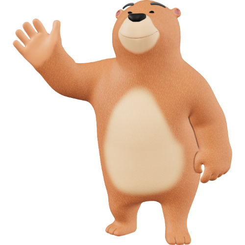

<!DOCTYPE html>
<html lang="fr">
<head>
	<meta charset="utf-8">
	<meta name="viewport" content="width=device-width, initial-scale=1">
	<title>WAJAAIS — West African Journal of AI & Agroecological Systems</title>
	<!-- Schema / Dublin Core basic metadata -->
 	<meta name="DC.title" content="West African Journal of Artificial Intelligence and Agroecological Systems (WAJAAIS)">
 	<meta name="DC.creator" content="Faculty of Applied Sciences, Alioune Diop University of Bambey (UADB), Senegal">
 	<meta name="DC.language" content="en,fr">
 	<link rel="stylesheet" type="text/css" href="style.css">
</head>
<body>
	<!-- Header -->
 	<header class="header">
	 	<div class="barre_principale">
	 		<div class="barre_du_haut">
	 			<div class="barre_du_logo">
	 				<button class="mobile-nav-toggle mobile" aria-label="Open menu" style="border-radius: 1em; border: none; background: transparent;">
			 			<ul class="conteneur_totalDuMenu_media">
			 			<li>
			 				<h2><a href="#" style="color: white;">☰</a></h2>
			 				<ul class="conteneur_menu">
			 					<li class="about_liste">
			 						<a class="nav-link About"><h3>About</h3></a>
			 						<ul class="sousconteneur_menu">
			 							<li><a href="Secondaire/pageAbout/About.html" class="nav-link About" translate="no">About WAJAAIS</a></li>
			 							<li><a href="Secondaire/pageAbout/About.html#scope" class="nav-link About" translate="no">Aims and Scope</a></li>
			 							<li><a href="Secondaire/pageAbout/About.html#board" class="nav-link About" translate="no">Editorial Board</a></li>
			 							<li><a href="Secondaire/pageAbout/About.html#policie" class="nav-link About" translate="no">Editorial Policies</a></li>
			 						</ul>
			 					</li>
			 					<li><a href="#current" class="nav-link" translate="no"><h3>Current Issue</h3></a></li>
			 					<li><a href="Secondaire/Archive/archive.html" class="nav-link" translate="no"><h3>Archives</h3></a></li>
			 				</ul>
			 			</li>
			 			</ul>
		 			</button>
		 			<div class="logo"><a href="#">WAJAAIS</a></div>
		 			<div class="mobile_text_logo">
		 				<div class="description_logo-titre">
		 					West African Journal of Artificial<br> Intelligence and Agroecological Systems
		 				</div>
		 				<div class="description_logo" style="font-size:13px;color:#d8f0df">
		 					Published by Faculty of Applied Sciences, Alioune Diop University of Bambey (UADB) — 		Senegal
		 				</div>
		 			</div>
	 			</div>
	 			<div class="boutton_submit">
	 				<a href="Secondaire/pageSubmit/submit.html" class="soumission_Boutton" translate="no" style="position: relative; left: 17px;">Submit Paper</a>
	 			</div>
	 		</div>
	 		<hr>
	 		<div class="barre_de_navigation">
	 			<nav class="nav">
	 				<div class="nav-links">
	 					<ul class="conteneur_deroulant">
	 						<li>
	 							<a href="Secondaire/pageAbout/About.html" class="nav-link About">ABOUT</a>
	 							<ul class="liste_deroulant">
	 								<li><a href="Secondaire/pageAbout/About.html" class="nav-link About" translate="no">About WAJAAIS</a></li>
	 								<li><a href="Secondaire/pageAbout/About.html#scope" class="nav-link About" translate="no">Aims and Scope</a></li>
	 								<li><a href="Secondaire/pageAbout/About.html#board" class="nav-link About" translate="no">Editorial Board</a></li>
	 							</ul>
	 						</li>
	 					</ul>
	 					<a href="#board" class="nav-link" translate="no">Editorial Board</a>
						<a href="#current" class="nav-link" translate="no">Current Issue</a>
						<a href="Secondaire/Archive/archive.html" class="nav-link">Archives</a>
		 			</div>
		 		</nav>
	 		</div>
	 	</div>
 	</header>


 	<!-- Hero -->
	<main class="container">
		<div class="hero card" style="align-items:flex-start">
			<div style="flex:1">
				<h1>
					Advancing AI & Sustainable Agroecology across West Africa
				</h1>
				<p class="lead">
					WAJAAIS publishes peer-reviewed research on Artificial Intelligence, Machine Learning, Remote Sensing and their applications to 
					sustainable agriculture and agroecological systems in West Africa.
				</p>
				<div style="margin-top:12px;display:flex;gap:10px">
					<a href="Secondaire/pageSubmit/submit.html" class="ctalink">
						Submit your manuscript
					</a>
					<a href="#current" class="currentlink" style="padding: 7px 0 0 10px; background:rgba(255,255,255,0.9);font-weight:700">Current Issue</a>
				</div>
				 <!-- Aims & Scope -->
				<div id="scope" style="margin-top:18px">
					 <h2><a href="Secondaire/pageAbout/About.html#scope" style="color:black;">Aims & Scope</a></h2>
					 <p class="lead">
					 	WAJAAIS publishes work on AI/ML methods, remote sensing, IoT/Edge-AI, agroecological modelling, climate resilience, and data￾driven solutions for sustainable agriculture in West Africa.
					 </p>
					 <ul>
						 <li>Smart agriculture & precision farming</li>
						 <li>Agroecological modeling & climate adaptation</li>
						 <li>Remote sensing & satellite-derived indicators</li>
						 <li>Edge AI, IoT, sensor networks for farming</li>
						 <li>Data-driven policy & socio-technical studies</li>
					 </ul>
				</div>
			</div>
			<div class="bloc_card_un">
				<div class="card">
					<div style="display:flex;justify-content:space-between;align-items:center;margin-bottom:8px">
						<div style="font-weight:700">Volume 1 — Issue 1 (2025)</div>
						<div class="badge"><a href="#">Open Access</a> </div>
					</div>
					<p class="lead">
						Featured: Hybrid Bi-LSTM ensemble modeling of cereal yields — Senegal case studies. DOI: <span 
						class="small">pending</span>
					</p>
					<hr style="border:none;border-top:1px solid rgba(15,23,42,0.04);margin:12px 0">
					<div style="font-size:13px;color:var(--muted)">Contact editorial office:</div>
					<div style="font-weight:700">editorial@wajaais.org</div>
				</div>
			</div>
		</div>


		<!-- Grid: main + sidebar -->
		<div class="grid" style="margin-top:18px">
			<main>
				<section id="about" class="card">
					 <h2>About WAJAAIS</h2>
					 <p class="lead">
					 	WAJAAIS is a peer-reviewed open access journal devoted to the intersection of Artificial Intelligence andAgroecology across West Africa. We welcome original research, reviews, and applied case studies combining data science and sustainable agriculture.
					</p>
					<ul>
					<li><strong>Publisher:</strong> Faculty of Applied Sciences, Alioune Diop University of Bambey (UADB), Senegal</li>
					<li><strong>Frequency:</strong> Biannual</li>
					<li><strong>Languages:</strong> English & French</li>
					<li><strong>License:</strong> CC BY 4.0 (Open Access)</li>
					</ul>
				</section>

				<!-- Current Issue -->
				<section id="current" class="card" style="margin-top:18px">
					<h2>Current Issue — Volume 1, Issue 1 (2025)</h2>
					<div class="article-list" style="margin-top:12px">
					<!-- Example items -->
					<article class="article-item">
						 <div style="flex:1">
						 	<div style="font-weight:700">Comparative Modeling of Cereal Yields in Senegal: A Hybrid Bi-LSTM & Ensemble Approach</div>
						 	<div class="article-meta">Gueye P.E.A., et al. — <span class="muted">DOI: pending</span></div>
						 	<p class="muted" style="margin-top:6px">
						 		Abstract: This paper compares hybrid Bi-LSTM and ensemble methods for cereal yield prediction using FAO agro-climatic data in Senegal.
							</p>
						 </div>
						 <div style="width:120px;text-align:right">
						 	<a class="pill" href="#">PDF</a>
						 </div>
					</article>
					<article class="article-item">
						 <div style="flex:1">
						 	<div style="font-weight:700">Edge-AI for Irrigation Management: A Field Trial in Baol Region</div>
						 	<div class="article-meta">Traoré M., Diallo S. — <span class="muted">DOI: pending</span></div>
						 	<p class="muted" style="margin-top:6px">
						 		Abstract: Implementation and evaluation of TinyML models on ESP32 for water-efficient irrigation.
						 	</p>
						 </div>
						 <div style="width:120px;text-align:right">
						 	<a class="pill" href="#">PDF</a>
						 </div>
					 </article>
					 </div>
				</section>
				 <!-- Editorial Board -->
				<section id="board" class="card" style="margin-top:18px">
					<h2>Editorial Board</h2>
					<p class="muted">Editor-in-Chief and advisory board. (This is a sample — update with real member names and affiliations.)</p>
					<div style="display:grid;grid-template-columns:repeat(auto-fit,minmax(220px,1fr));gap:12px;margin-top:12px">
						<div class="card">
					 		<div style="font-weight:700">Dr. Pape El Hadji Abdoulaye Gueye</div>
					 		<div class="muted">Editor-in-Chief — UADB, Senegal</div>
					 	</div>
					 	<div class="card">
					 		<div style="font-weight:700">Prof. Aminata Diop</div>
					 		<div class="muted">Associate Editor — University of Dakar</div>
					 	</div>
					 	<div class="card">
					 		<div style="font-weight:700">Dr. Kofi Mensah</div>
					 		<div class="muted">Editorial Board — University of Ghana</div>
					 	</div>
					</div>
				</section>
			</main>


			<!-- Sidebar -->
			<aside>
				<div class="card">
					<h3 style="margin-top:0">Quick Links</h3>
					<ul style="padding-left:16px">
						<li><a href="Secondaire/pageSubmit/submit.html">Submit Manuscript</a></li> 
						<li><a href="#instructions">Author Guidelines</a></li>
						<li><a href="#policies">Editorial Policies</a></li>
						<li><a href="#doi">DOI & Licensing</a></li>
					</ul>
				</div>
				<div class="card" style="margin-top:12px">
					<h3 style="margin-top:0">Announcements</h3>
					<div class="small muted">Inaugural call for papers — deadline: 30 December 2025</div>
				</div>
				<div class="card" style="margin-top:12px">
					<h3 style="margin-top:0">DOI & Open Access</h3>
					<p class="small">WAJAAIS will assign Crossref DOIs to all published articles. License: CC BY 4.0.</p>
				</div>
			</aside>
		</div>

		<!-- Footer -->
		<footer class="container">
			 <!-- Contact -->
			<section id="contact" class="section_contact">
				<div class="contact">
					<h2>Contact</h2>
					<p class="muted">Editorial Office, WAJAAIS — Faculty of Applied Sciences, Alioune Diop University of Bambey</p>
					<p><strong>Email:</strong> editorial@wajaais.org</p>
					<p><strong>Postal Address:</strong> Alioune Diop University of Bambey, Baol Region, Senegal</p>
				</div>
				<div class="site_de_contact">
					<div class="new_letter">
						<h2 translate="no">Follow us</h2>
						<div class="liens_externe">
							<a target="_blank" href="https://www.youtube.com/@uadbcentrederessourcesinfo74"></a>
							<a target="_blank" href="https://facebook.com/www.uadb.edu.sn"></a>
						</div>
						<button id="apparaitre" type="button" id="login"><a href="#"> <h2 translate="no">new letter</h2></a></button>
					</div>
					<div class="site_de_contact_liens">
						<a target="_blank" href="https://www.youtube.com/@uadbcentrederessourcesinfo74"></a>
						<a target="_blank" href="https://facebook.com/www.uadb.edu.sn"></a>
					</div>
				</div>
			</section>
			<hr>
			<br>
			<div style="display:flex;justify-content:space-between;align-items:center;gap:12px;flex-wrap:wrap">
				<div class="small">© 2025 WAJAAIS — Faculty of Applied Sciences, Alioune Diop University of Bambey</div>
				<div style="display:flex;gap:10px;align-items:center">
					<a class="small" href="#">Privacy</a>
					<a class="small" href="#">Terms</a>
					<a class="small" href="#">ISSN (applied)</a>
				</div>
			</div>
		</footer>
	</main>
	<div id="signup-container" class="cache">
		<div id="monElemet">
	        <h2>✨ Créer un Compte</h2>

	        <form action="/register" method="POST">
	            
	            <div class="form-group">
	                <label for="firstName">Prénom :</label>
	                <input type="text" id="firstName" name="firstName" placeholder="Votre prénom" required>
	            </div>

	            <div class="form-group">
	                <label for="lastName">Nom :</label>
	                <input type="text"  id="lastName" name="lastName" placeholder="Votre nom" required >
	            </div>

	            <div class="form-group">
	                <label for="email">Adresse Email :</label>
	                <input type="email" id="email" name="email" placeholder="exemple@domaine.com" required autocomplete="email">
	            </div>

	            <div class="form-group">
	                <label for="password">Mot de passe :</label>
	                <input 
	                    type="password" id="password" name="password" placeholder="Minimum 8 caractères" required minlength="8" autocomplete="new-password">
	            </div>

	            <div class="form-group">
	                <label for="confirmPassword">Confirmer le mot de passe :</label>
	                <input type="password" id="confirmPassword" name="confirmPassword" placeholder="Retapez le mot de passe" required>
	            </div>

	            <div class="form-group checkbox-group">
	                <input type="checkbox" id="terms" name="terms" required>
	                <label for="terms">J'accepte les <a href="/terms" target="_blank">conditions générales</a>.</label>
	            </div>

	            <button id="signup" type="submit">S'inscrire</button>
	            
	        </form>
	        <button id="disparaitre">close</button>
        </div>
    </div>
    <div id="bienvenue_conteneur">
    	<div class="contenue-message">
    		<h1 style="position:relative; left: 40px; ">
    			Bienvenue sur WAJAAIS
    		</h1>
    		
    		<button id="disparaitre_un" style="font-size:20px;">CLOSE</button>
    	</div>
    </div>
</body>
<script src="dossier_JS/newLetter.js"></script>
</html>